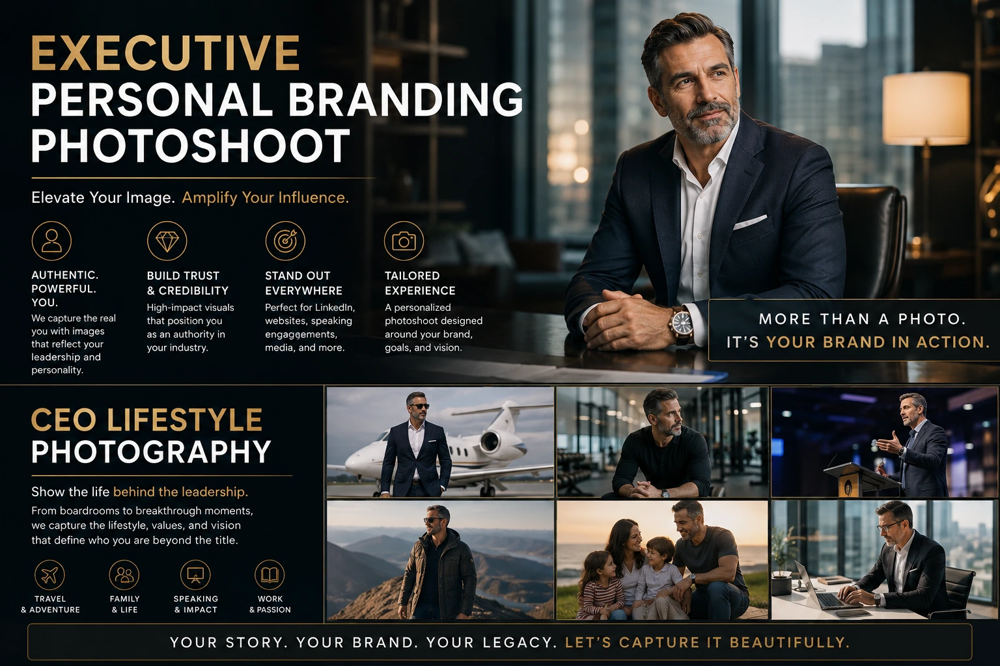
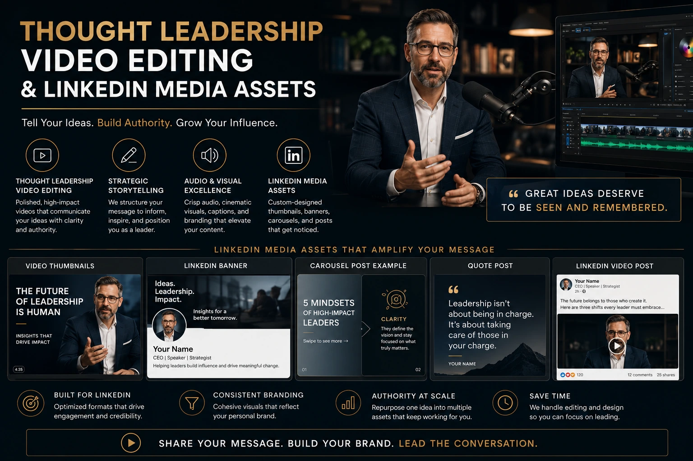

Why 4K Cinematic Headshots and Talking-Head Videos are the New Resume
The Professional Identity Shift That Most Senior Professionals Have Not Made
The résumé is not dead. But it is no longer the primary document through which professional identity is evaluated. In 2026, the first assessment of any founder, executive, consultant, or senior professional is visual — it happens on LinkedIn, on a company website, or in a Google search result, and it happens before the résumé is ever opened.
The visual assessment takes less than three seconds. The LinkedIn profile photograph, the banner image, the first video that appears in the featured section — these are the elements that determine whether a decision-maker, investor, partner, or prospective employer continues to engage or closes the tab. And the quality of these visual elements communicates professional standards, attention to detail, and self-investment in a way that is impossible to separate from the professional judgment being made about the person they represent.
An executive personal branding photoshoot, a series of professionally produced corporate talking-head videos, and a strategically built library of LinkedIn media assets are not vanity investments for senior professionals who want better social media content. They are the contemporary equivalent of the professionally typeset résumé — the signal that this professional takes their work and their public representation seriously enough to invest in both at a professional level.
What Professional Corporate Headshots Actually Communicate
Searching for professional corporate headshots near me typically produces a range of options from quick one-hour studio sessions to full executive personal branding sessions — and the commercial difference between these two products is not just the image quality. It is the range of professional communication the resulting images can serve.
A single headshot from a quick studio session produces one image: the profile photograph. Useful, necessary, but limited. An executive personal branding photoshoot produces a comprehensive image library that serves every professional communication context across eighteen months:
The Hero Portrait
The primary LinkedIn profile image, press feature photograph, and speaking engagement bio image. Shot with professional lighting, depth of field that separates the subject from the background, and enough visual quality to communicate professional credibility at any display size from a thumbnail to a full-page press feature.
Working Portraits
The executive in their professional context — at the desk, reviewing material, in conversation — that communicates competence and authentic professional character rather than just appearance. These are the images that accompany LinkedIn articles, website about pages, and investor communications where the executive needs to appear as a functioning professional rather than a formal portrait subject.
Environmental Portraits
The executive in the physical spaces that define their professional identity — the office, the factory floor, the co-working space, the research environment. Environmental context communicates professional scale and operational reality in a way that a studio backdrop cannot.
Leadership and Team Images
The executive in genuine interaction with team members — not a posed group photograph, but observed moments of direction, conversation, and collaboration that communicate leadership style, interpersonal character, and the human environment of the organisation they lead.
High-End Business Photography: Why Quality Level Matters for Executive Images
High-end business photography for executive personal branding is not about aesthetic indulgence — it is about the visual quality standards that the professional contexts these images serve actually require. A founder whose profile photograph is noticeably inferior in quality to the profile photographs of the investors they are pitching, the clients they are selling to, or the candidates they are recruiting is communicating something about their professional standards that no written claim about quality can override.
The specific technical qualities that distinguish high-end business photography for executive portraits from lower-quality alternatives:
- Sensor quality and depth of field. Professional executive portraits are shot on large-sensor cameras at focal lengths (typically 85mm to 135mm) that produce the natural depth of field separation — a sharply focused face against a softly blurred background — that communicates professional quality at a glance. Smartphone portraits and wide-angle shots produce a compressed, flat depth of field that reads as amateur photography regardless of the subject's actual professional standing.
- Lighting design. Professional executive portrait lighting uses a multi-point setup — typically a main light, fill light, and rim or hair light — that creates the three-dimensional depth and skin tone quality that communicates visual sophistication. Flat, single-source, or available-light portraits produce a two-dimensional quality that feels casual rather than professional.
- Post-production skin tone calibration. High-end portrait retouching preserves the natural texture and character of the subject's skin while correcting technical inconsistencies in lighting and colour — without the over-smoothed, plastic quality of heavy beauty retouching. The goal is the most professional version of the subject's actual appearance, not a digitally idealised version of it.
- Resolution for multi-scale use. Executive portrait images should be delivered at sufficient resolution for both screen display (LinkedIn, website) and print use (press features, conference programmes, printed materials). A minimum delivery resolution of 3000 pixels on the long edge serves both contexts without requiring a reshooting for different uses.

Corporate Talking-Head Video Production: The Authority Signal of 2026
If the professional headshot is the new résumé photograph, corporate talking-head video production is the new cover letter — and it is several orders of magnitude more persuasive than any written equivalent. A professionally produced talking-head video of an executive speaking with clarity and conviction about their domain of expertise communicates in three minutes what a written profile cannot communicate in three pages: the person's intelligence, communication quality, knowledge depth, and professional character.
The production standard that makes a corporate talking-head video function as an authority signal rather than a social media post:
- 4K recording with cinematic depth of field. A talking-head video recorded in 4K on a large-sensor camera at an aperture that produces background separation — the subject in crisp focus, the background softly blurred — looks fundamentally different from a Zoom-call recording, a webcam video, or a smartphone selfie video. The visual quality of 4K cinematic recording communicates professional investment in a single frame — before the speaker has said a word.
- Professional audio with zero background noise. Clear, present, noise-free audio is the most immediately perceived quality difference between a professional talking-head video and an amateur one. A lapel microphone in a controlled acoustic environment — or a directional microphone with post-production noise reduction — produces audio that sounds like a television interview rather than a conference call. Viewers tolerate low visual quality far more readily than they tolerate poor audio.
- Intentional background design. The background visible behind the executive in a talking-head video is as important as the executive's performance. A thoughtfully curated background — a branded environment, a relevant professional context, a clean and visually coherent workspace — communicates professional identity without the sterile anonymity of a pulled-up backdrop or the distracting clutter of an uncontrolled office environment.
- Professional colour grade. The colour treatment of a corporate talking-head video — applied in post-production — creates the visual consistency across a series of videos that builds brand recognition. An executive whose video content always has the same visual mood, the same colour warmth, the same lighting character is communicating visual discipline and brand identity. A series of videos with inconsistent colour treatment looks like a series of individual recordings rather than a content system.
CEO Lifestyle Photography: Beyond the Portrait
CEO lifestyle photography is the category of executive personal branding imagery that performs best as ongoing LinkedIn content — because it communicates the executive as a functional professional in their actual environment rather than as a formal portrait subject. It produces the images that accompany LinkedIn posts, that appear in press features about the company, and that populate the working-image slots on the company website's about and leadership pages.
The CEO lifestyle photography approach for Indian executives in 2026:
- Documentary coverage of a real working day. The most authentic and commercially effective CEO lifestyle images are produced by a photographer who accompanies the executive through a genuine working day — capturing meetings, decisions, working moments, and interactions as they actually occur rather than staging versions of these activities for the camera. The observational approach produces images with the quality of genuine documentary photography — natural expressions, real context, unposed authenticity — that no amount of directing can replicate.
- Location diversity within a single session. A comprehensive CEO lifestyle photography session should capture the executive in at least three distinct contexts: the office or working space, a meeting or presentation context, and an environmental or site context relevant to the business. This variety produces a library that serves different content purposes across the year rather than a set of similar images from a single context.
- Communication of leadership style, not just leadership title. The most effective CEO lifestyle images communicate how this specific executive leads — whether they are collaborative or directive, detail-focused or visionary, formal or approachable. This quality is visible in the images when the photographer captures genuine interactions rather than staged ones: the way the executive listens in a meeting, the body language in a working conversation, the focus during a solitary working moment.
Thought Leadership Video Editing: Building an Ongoing Content System
Thought leadership video editing is the post-production discipline that transforms a single corporate talking-head video production session into a three to six month content system. A single session producing 60 to 90 minutes of raw talking-head footage — covering 8 to 12 distinct topic questions — generates sufficient raw material for 12 to 24 individual video posts across LinkedIn, YouTube Shorts, and Instagram Reels when processed through a systematic thought leadership video editing workflow.
The systematic editing workflow for thought leadership content extraction:
Long-Form Platform (YouTube, LinkedIn Articles)
- Full topic answers edited to 3 to 5 minutes with b-roll and lower thirds
- Structured narrative arc: insight, explanation, evidence, implication
- Professional colour grade and audio mastering applied consistently
- Chapter markers for YouTube playback navigation
LinkedIn Native Video (60 to 90 seconds)
- The single most compelling 60 to 90 seconds from each topic session
- On-screen text overlays communicating the key point on mute
- Opening hook in the first three seconds before the executive begins speaking
- Caption written as keyword-relevant professional insight, not a video description
Short-Form Distribution (Instagram Reels, YouTube Shorts)
- 30 to 60 second cuts featuring the single most shareable insight from each topic
- Vertical 9:16 format with consistent branded visual treatment
- Hook text overlay in the first two seconds — the counterintuitive insight or the specific problem statement
- Minimal post-production to maintain the authentic talking-head quality that performs best in short-form feeds

Building Professional Authority Online: The LinkedIn Media Asset Strategy
Building professional authority online through LinkedIn media assets is not a single production investment — it is a content system that produces compounding professional credibility with every piece of content published. The LinkedIn media asset strategy for executive personal branding:
- Profile photograph: the anchor asset. The single most important LinkedIn media asset. It should be the best image from the executive personal branding photoshoot — the one that most clearly communicates professional credibility and personal character simultaneously. It is seen by every connection, every recruiter, every prospective partner, and every investor who visits the profile. It should be updated after every major career transition or every two years — whichever comes first.
- LinkedIn banner: the brand context image. The banner image behind the profile photograph is a 1584 × 396 pixel branding opportunity that most executives leave as LinkedIn's default blue gradient. A professionally designed banner — using the executive's personal brand visual identity, a relevant environmental image from the lifestyle session, or a branded statement image — communicates visual intentionality before the profile text is read.
- Featured section: the authority evidence panel. The LinkedIn featured section allows executives to pin specific content — articles, videos, media appearances, documents — to the top of their profile. A featured section populated with three to five high-quality pieces of professional content (a keynote video, a published article, a media feature, a flagship LinkedIn video) communicates breadth and depth of professional authority to anyone who visits the profile.
- Video posting cadence: fortnightly minimum. An executive whose LinkedIn profile features regular native video posts — at minimum one per fortnight — builds algorithmic visibility and professional familiarity with their network in a way that text-only posting cannot match. LinkedIn's algorithm currently distributes native video content to a significantly wider audience than equivalent text posts from the same account.
- Article and newsletter consistency. LinkedIn articles and newsletters — consistently published, consistently structured, consistently visual — build the published author credibility that positions an executive as a thought leader in their domain rather than a content creator. Each published article contributes to the executive's indexed professional identity on Google as well as LinkedIn.
Executive Profile Portraits: What Separates Good from Extraordinary
Executive profile portraits are evaluated against a very specific standard by the people who encounter them — not a photographic standard, but a professional credibility standard. The question a viewer asks — unconsciously, in under three seconds — is not "is this a good photograph?" but "does this person look like someone I would want to work with, invest in, or be advised by?"
The specific visual qualities that determine the answer to this question in executive profile portraits:
- Eye contact: direct and comfortable, not performed. The executive who looks directly into the camera lens with natural ease communicates confidence without aggression, approachability without informality. The look should feel like a direct conversation — not a posed performance of confidence.
- Expression: genuine engagement, not a smile for the camera. The most effective executive portraits have a neutral-to-slight expression that communicates intelligence and engagement rather than the performed smile of a formal portrait. A slight forward lean, a genuine expression caught in a natural moment, communicates more credibility than a posed formal smile — which the viewer's brain immediately reads as a performance.
- Wardrobe: appropriate to the executive's industry and role. The clothing in an executive portrait communicates industry context and personal brand positioning. A tech founder in a casual smart outfit communicates the operational startup culture; a financial executive in a formal suit communicates regulatory seriousness; a creative director in considered styling communicates aesthetic intelligence. The wardrobe should be the most professional version of what the executive actually wears in their working context — not a borrowed formal outfit that feels foreign to their professional identity.
- Background: contextually relevant, visually clean. The background of an executive portrait should communicate the professional world the executive inhabits — softly blurred to background priority, visually coherent rather than distractingly busy, and specifically chosen to reinforce the professional identity being communicated. A generic white studio background communicates no professional context. A softly blurred office environment, a relevant architectural background, or a carefully chosen environmental setting communicates professional specificity.
Conclusion
In 2026, the professional profile — the LinkedIn photograph, the banner, the featured video, the published thought leadership content — is evaluated before the résumé, before the meeting, before any direct professional interaction. The executive personal branding photoshoot, the corporate talking-head video production series, the strategically assembled LinkedIn media assets library, and the ongoing thought leadership video editing workflow are the professional investments that build the visual identity and content authority that the contemporary professional landscape requires.
The executives building professional authority online most effectively in 2026 are not doing so by posting more content. They are doing so by investing in the production quality and strategic consistency that makes their professional presence unmistakably credible — in the three seconds before anyone reads a single word of their professional history.
At The PhD Ads, we produce executive personal branding photoshoots, corporate talking-head video production, CEO lifestyle photography, and complete LinkedIn media assets libraries for Indian founders, executives, and senior professionals — built for the professional contexts where your visual presence determines whether the conversation happens at all.
Key Topics
Ready to Build Your Executive Visual Identity?
At The PhD Ads, we produce executive personal branding photoshoots, corporate talking-head video series, CEO lifestyle photography, and LinkedIn media assets for Indian founders and executives — professional visual identity built for the contexts where your reputation is evaluated before you speak.
Email: team@e2o.in